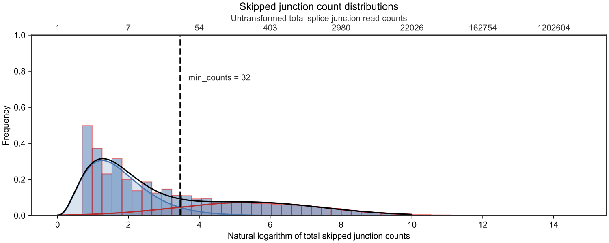

Documentation
Alternative splicing, proteomics, mass spectrometry, RNA sequencing, protein isoforms, proteoforms
Overview
The use of custom RNA-seq derived protein sequences has been shown to be a viable strategy for identifying non-canonical gene products not documented in common protein sequence databases. However, the inclusion of too many sequences can lead to false positive identifications. JCAST combines splice junction modeling and one-frame translation to create small custom protein sequence databases.
JCAST is a command line tool that takes an annotation GTF file, rMATS results, and a genome FASTA file to create custom protein FASTA files for downstream analysis. To prioritize likely detectable splice junctions, JCAST can model the splice junction read counts in RNA-seq (-m) and use this model to calculate the minimal read count cutoff for in silico translation. Without -m, the cutoff is set with -r (by default 1, which keeps every junction). An example of the read count mixture model is shown below.

Output
JCAST outputs FASTA databases which can be further filtered and combined using any scripting language, or used directly in virtually any shotgun proteomics database search engine (e.g., SEQUEST, Crux/Tide, MaxQuant, MS-GF+). Depending on the settings and input files, not every file below is written.
JCAST writes a small number of FASTA files into the output directory. Each entry’s header encodes the source rMATS row, slice number, junction coordinates, translation strand, frame, and tier (see below).
| File | Contents |
|---|---|
psq_canonical.fasta |
Sequences identical to the canonical SwissProt/GTF protein for the gene. Headers follow UniProt convention. |
psq_T1.fasta |
Tier 1. Both slices translate in their annotated reading frames with no premature stop codon (PTC), and the event does not shift the reading frame: the slices’ coding lengths, measured from each slice’s frame, differ by a multiple of 3. Both slices are stitched into the canonical full-length protein. |
psq_T1_alt_cterm.fasta |
Tier 1, alternative C-terminus. One slice ends at an annotated protein-coding stop codon that is not the canonical protein’s. It is a complete C-terminus, not a premature stop, and is joined to the canonical at its N-terminus only. |
psq_T1_alt_nterm.fasta |
Tier 1, alternative N-terminus. The gene’s start codon lies in an alternative exon that this slice lacks. The slice is translated from another annotated start codon it contains, and joined to the canonical at its C-terminus only. |
psq_T1_alt_both.fasta |
Tier 1, both termini alternative. The slice starts at an alternative annotated start codon and ends at an alternative annotated stop codon (created only when needed). |
psq_T2.fasta |
Tier 2. As T1, but the coding lengths differ by a non-multiple of 3 (frameshift). A slice that cannot be stitched at both ends may be joined at its N-terminus only. |
psq_T4.fasta |
Tier 4. Only one slice translates; the other hits a PTC. The PTC slice is translated up to its stop codon, giving a truncated product, which is joined to the canonical at its N-terminus. If it is shorter than params.ptc_threshold × the other slice, or cannot be joined, it goes to psq_T4_orphan.fasta. Treat T4 with caution — exclude from MS searches unless you have a specific reason to include it. |
psq_T#_orphan.fasta |
Slices of that tier that translated but could not be stitched back to the canonical sequence: no unique 7-residue anchor at an end that needs joining. Treat orphans with caution. |
uniprot_canonicals.tsv |
With --uniprot: the canonical chosen for each gene, and how (by sequence, by gene name, from the GTF, or none). |
psq_isoforms.tsv |
With --uniprot: every JCAST record identical to a UniProt canonical or isoform, with its accession. |
jcast_uniprot_merged.fasta |
With --uniprot: a search database, made of the supplied UniProt FASTA plus the new psq_T1 and psq_T1_alt_* records, renamed sp|<accession>-J<n>|<entry name>. |
junctions.tsv |
One row per junction, in rMATS file order: its read count, FDR, fate, frames, coding region, canonical, and the files its records went to. See below. |
logfile.log |
The run’s settings and inputs, warnings and errors, and a summary: junctions by fate and splice type, records per file, and the time taken. With -v, also each junction’s steps and sequences. |
Note: Tier 4 and orphan sequences are truncated or not full-length. Exclude them from database searches, or interpret them with a great amount of caution.
There is no Tier 3 from v0.4.0. It re-translated in a guessed frame when the annotated frame failed, and was removed together with the three-frame fallback (see CHANGELOG.md).
Annotated start and stop codons are taken from protein-coding transcripts with transcript support level ≤ params.tsl_threshold. A stop codon annotated only on nonsense-mediated-decay transcripts, or not annotated at all, is still a premature stop (T4).
How a junction is processed (v0.4.0):
- Filters. A junction whose read count (header field 11) is below the cutoff, or whose rMATS FDR is outside
-q, is skipped before anything else. The cutoff is-r, or the-mmodel’s boundary in reads; a junction with exactly that many reads is kept. With-c, a skipped junction’s gene still gets its canonical written. - Trimming. Every exon is trimmed to the gene’s annotated coding region. This runs from the most upstream start codon to the most distal stop codon of protein-coding transcripts with transcript support level ≤
params.tsl_threshold. Exons entirely in the UTR are removed. - Skip if outside the coding region. If the splice event lies entirely outside the coding region, both slices are identical after trimming. The junction is skipped (
SKIPPED. Splice event lies outside the annotated coding region.), and the canonical is still written with-c. - Reading frame. Each slice is read in its own frame, taken from the annotated coding sequence at the slice’s 5′ end. A slice with no annotated frame is not translated, for example in a lncRNA or a pseudogene. Frames are never guessed.
Skipped and failed junctions write no isoform sequences. Each junction’s outcome (fate) is a row of junctions.tsv.
For a typical proteomics workflow, append psq_T1.fasta and psq_canonical.fasta to a base SwissProt database and search as usual. Including T2, T4 and orphans is possible but increases false-discovery risk.
junctions.tsv
One row per junction of the selected splice types, in rMATS file order, tab-separated. It reads directly into R (read.delim) or pandas (pd.read_table).
| Column | Contents |
|---|---|
junction_type, junction_id |
The rMATS splice type and row id. |
gene_id, gene_symbol, chr, strand |
As in the rMATS row. |
min_jc |
The read count that -r and -m filter on (header field 11). |
fdr |
The rMATS FDR, which -q filters on. |
fate |
T1, T1_alt_terminus, T2, T4, fail (no slice translates), exception (the junction raised an error; see the log), skipped_low_count, skipped_fdr, skipped_masked or skipped_outside_cds. |
fate_detail |
For T4, the slice that hit the premature stop; for exception, the error. |
slice1_phase, slice2_phase |
Each slice’s annotated frame (0, 1 or 2). Empty if it has none, or if the junction was skipped before it was looked up. |
cds_start, cds_end |
The coding region the slices were trimmed to. Empty if unknown on that side, or not looked up. |
canonical_source, canonical_accession |
Where the gene’s canonical came from: as in uniprot_canonicals.tsv with --uniprot (e.g. sp by sequence), sp by API or tr by API without it, gtf, or none. Empty if it was not looked up (a skipped junction without -c). |
files |
The psq_<name>.fasta files of the junction’s records, as <name>, ;-separated. |
new_records |
How many of its records were written. A record whose sequence is already in its file, from an earlier junction, is not written again. |
Header format
Non-canonical FASTA entries are named as follows:
>sp|Q91VW5|GOGA4_MOUSE|ENSMUSG00000038708|MXE1|0|chr9|118560742:118560872|118565557:118565667|+2|r521|T1 sp|Q91VW5|...The |-separated fields are:
- Knowledgebase code (
spfor SwissProt). - UniProt accession of the canonical entry.
- UniProt entry name.
- Ensembl gene id.
- rMATS splice type and slice number (e.g.
MXE1,MXE2). - rMATS row id.
- Chromosome.
- Anchor exon
start:end. - Alternative exon
start:end. - Translated strand and that slice’s phase (e.g.
+2). - Read count, prefixed with
r: the smaller of the junction’s inclusion and skipping junction counts, each summed over samples and replicates. This is the count-rand-mfilter on. - Tier (
T1,T1_alt_cterm,T1_alt_nterm,T1_alt_both,T2,T4).
When the canonical comes from the GTF rather than UniProt (use_gtf_only in jcast/params.py, or a gene without a UniProt entry with --uniprot), fields 1–3 are the Ensembl gene id, the gene symbol, and the gene id again. A gene that rMATS reports without a symbol (NA) is named NoGeneName_<gene id>.
Options
$ jcast --help
usage: jcast [-h] [-o OUT] [--overwrite] [--cache_dir CACHE_DIR] [-r READ] [-m] [-c]
[--uniprot UNIPROT] [-p PROCESSES] [-v] [--mask MASK]
[-s {MXE,SE,RI,A5SS,A3SS} [{MXE,SE,RI,A5SS,A3SS} ...]] [-q q_lo q_hi]
rmats_folder gtf_file genome
jcast retrieves transcript splice junctionsand translates them into amino acid sequences
positional arguments:
rmats_folder path to folder storing rMATS output
gtf_file path to Ensembl gtf file
genome path to genome file (optionally .gz)
options:
-h, --help show this help message and exit
-o OUT, --out OUT output directory, created if needed [default: out]
--overwrite replace the output of an earlier run in the output directory; without it,
a directory holding JCAST output is refused [default: False]
--cache_dir CACHE_DIR
directory for the GTF cache and the UniProt API cache [default: the user
cache directory, e.g. ~/Library/Caches/jcast or ~/.cache/jcast]
-r READ, --read READ the lowest read count for a junction to be translated: the smaller of its
inclusion and skipping junction counts, each summed over samples and
replicates [default: 1, which keeps every junction]
-m, --model take the read count cutoff from a Gamma + Normal mixture model of the read
counts of every rMATS file in the folder (also those -s leaves out),
instead of -r (used only if the fit fails) [default: False]
-c, --canonical write out canonical protein sequence even if transcriptslices are
untranslatable [default: False]
--uniprot UNIPROT UniProt FASTA (e.g. Swiss-Prot with isoforms for the species, optionally
.gz) to take canonical proteins from instead of the UniProt API; genes
without an entry use the GTF. Also writes jcast_uniprot_merged.fasta,
psq_isoforms.tsv and uniprot_canonicals.tsv [default: none, use the API]
-p PROCESSES, --processes PROCESSES
number of processes to translate junctions in; the output is the same for
any number. More than 1 needs --uniprot (canonicals from the UniProt API
are fetched and cached by one process only), and macOS or Linux [default:
1]
-v, --verbose also log each junction's steps and its sequences, at DEBUG level (large:
300 MB for a whole-genome -m run); without it, the log has the run's
settings, warnings, errors and a summary, and each junction's outcome is
in junctions.tsv [default: False]
--mask MASK deprecated and ignored: slices containing any base other than A, C, G or T
(case-insensitive) are always skipped. Will be removed in the next
release.
-s {MXE,SE,RI,A5SS,A3SS} [{MXE,SE,RI,A5SS,A3SS} ...], --splice_type {MXE,SE,RI,A5SS,A3SS} [{MXE,SE,RI,A5SS,A3SS} ...]
splice types to translate; only their rMATS files need to be in the folder
[default: MXE SE RI A5SS A3SS]
-q q_lo q_hi, --qvalue q_lo q_hi
take junctions with rMATS fdr within this threshold [default: 0 1]Canonicals from a UniProt FASTA (--uniprot, recommended)
By default JCAST asks the UniProt API for each gene’s canonical protein. If a request fails after its retries, or is refused, that junction fails (FAILURE (exception), see below) rather than going on without a canonical, and the run continues. With --uniprot, JCAST reads a UniProt FASTA you supply instead. This needs no network access, and the file records which UniProt release was used. Download Swiss-Prot with isoforms for your species, for human:
curl -o uniprot_sprot_human_isoforms_2026_04.fasta.gz \
'https://rest.uniprot.org/uniprotkb/stream?compressed=true&format=fasta&includeIsoform=true&query=(proteome:UP000005640)+AND+(reviewed:true)'Put the release in the file name, as above. The FASTA itself does not record it; the download’s X-UniProt-Release response header does.
Each gene’s canonical is chosen as follows: 1. the UniProt canonical whose sequence equals a protein translated from one of the gene’s GTF transcripts; 2. else the one whose gene name (GN=) is the gene symbol, if no other gene in the GTF has that symbol; 3. else the GTF canonical.
A match is used only if it is unique. No identifiers are mapped: GTFs carry no UniProt accessions. On a whole human genome this agrees with UniProt’s own Ensembl cross-references for 99.35% of protein-coding genes that have a Swiss-Prot entry (reports/2026-11-12-uniprot-mapping-audit.md).
The GTF canonical is the longest coding sequence among the gene’s protein-coding transcripts that have transcript support level ≤ params.tsl_threshold (2) and annotated start and stop codons. If none qualifies, it is the transcript the GTF tags Ensembl_canonical, as GENCODE GTFs do, at any support level, if: - it is protein-coding; - it has annotated start and stop codons; - it is not tagged readthrough_transcript.
Readthrough genes get no GTF canonical unless one of their transcripts passes the first rule. - A readthrough transcript spans two neighbouring genes. - rMATS reports each event under one gene only. In a whole-genome human run, 45% of the readthrough genes’ skipped-exon events skip an exon of another protein-coding gene. - Joined to a readthrough canonical, their slices would read as fusion proteins, so they are written as orphans (_orphan files). - In that run (GENCODE v50, Swiss-Prot), 370 of the 371 protein-coding genes left without a canonical are readthrough genes (reports/2026-11-12-ensembl-canonical-audit.md).
Swiss-Prot or Swiss-Prot + TrEMBL. - For human, Swiss-Prot is recommended. - A FASTA that also holds TrEMBL entries (reviewed:false) is accepted. TrEMBL entries are used only after Swiss-Prot, by the same rules. - Adding TrEMBL gives a canonical to some genes that have neither a Swiss-Prot entry nor a GTF canonical. In a whole human genome that is 203 genes. Their records can then be joined instead of written as orphans. - For species with little Swiss-Prot coverage, include TrEMBL. - Records joined to a TrEMBL canonical are named tr|…. They are left out of jcast_uniprot_merged.fasta, which merges Swiss-Prot only.
The run also writes: - uniprot_canonicals.tsv: the canonical chosen per gene, and how. - psq_isoforms.tsv: every JCAST record identical to a UniProt canonical or isoform. - jcast_uniprot_merged.fasta: a search database. It holds every entry of the supplied FASTA, then each psq_T1 and psq_T1_alt_* record that was joined to a Swiss-Prot canonical and is not identical to a UniProt entry. Each is renamed sp|<accession>-J<n>|<entry name>, followed by its JCAST header.
Several processes (-p)
-p N translates junctions in N processes. The output files and the log are the same as with one process (except for the run time): - the worker processes only translate; - the main process writes every record, row of junctions.tsv and log line in rMATS file order.
On a whole-genome run, 16 processes are about 11× faster than one. Memory barely grows, because the workers share the genome and GTF already loaded rather than copying them.
-p above 1 has two requirements: - --uniprot. Without it, canonicals come from the UniProt API, one request per gene. The answers are cached in a local database that several processes cannot safely share, and concurrent requests would load the EBI servers. The command line rejects -p 2 without --uniprot. - macOS or Linux. On Windows, JCAST warns and uses one process.
Leave a core or two for the system: -p set to the number of cores minus 2 is a reasonable maximum.
Known issues
- Use an unmasked or soft-masked genome, not a hard-masked one.
- Soft-masked (lowercase) bases are read as ordinary sequence, so Ensembl
dna_smor UCSChg38.fagive exactly the same output as an unmasked genome. - Any slice containing N or another ambiguous base is skipped (fate
SKIPPED ... masked or ambiguous bases). - A hard-masked genome (Ensembl
dna_rm) replaces repeats with N, so every junction touching a repeat is skipped: 19% of the chr15 test junctions. See reports/2026-11-11-masked-bases-audit.md.
- Soft-masked (lowercase) bases are read as ordinary sequence, so Ensembl
- Caches. JCAST keeps two caches in the user cache directory, or in
--cache_dir:- the GTF, read into a table: about 2 GB for GENCODE. The first run on a GTF builds it, about 5 minutes for GENCODE; later runs read it in seconds. A changed GTF gets a new cache.
- the UniProt API’s answers, used without
--uniprot.
<gtf>.cachedfiles written by earlier versions next to the GTF are no longer used and can be deleted. - A junction that raises an error gets the fate
exceptioninjunctions.tsv, with the error infate_detail, and the run continues. Its traceback is inlogfile.log, and the console reports how many junctions failed. - Tier 4 contains products truncated at a stop codon. Alternative C-termini at an annotated stop codon go to
psq_T1_alt_cterm.fastainstead. A stop codon that the annotation does not support stays in T4, and some of these may still be genuine. Treat T4 outputs as candidates for follow-up validation, not as confirmed identifications.